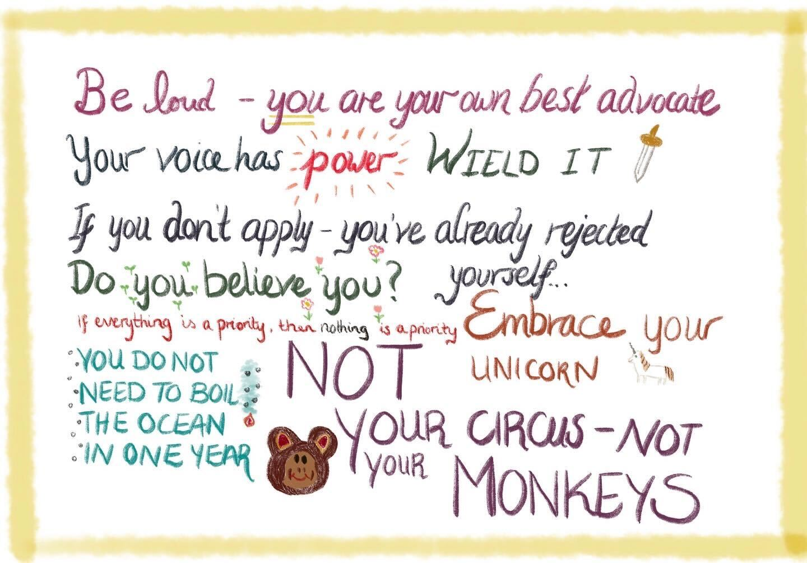

This is the Most Important Chapter
The audience of this thesis is four-fold: you are likely either
- My colleague
- Someone close to me
- On my PhD defense committee
- A grad student that got told to read this by your supervisor and you don’t know why
I’m here to appeal to the fourth genre of reader. I struggled a lot with impostor syndrome for a long time in my PhD. So, instead of doing a bunch of cringe quotes about things like “history” and “physics” at the start of each chapter, I’m going to give you a bunch of motivational quotes from people that inspired me in my PhD journey.
I asked these people, more or less: “What advice would you give to yourself if you were to do your PhD again?” Their responses are as follows:
I wish someone had said to me. Find somewhere good to study- maybe a couch- maybe a table too and learn to study. Really learn to study calmly. Because You have to play the long game this time.
– Melissa Franklin
Work life balance is important, shame your physics friends into turning off their physics brains if you have to !
– Sean Gasiorowski
Try to find something that genuinely excites you or sets your brain on fire, even if it isn’t the thing that other people think is the most important. There are an endless number of projects that someone thinks (correctly!) are important and which will benefit from your work, but you should focus on the things that you have fun working on. Those are the things that will carry you through.
Work with people that are respectful, honest, and kind. Everyone is brilliant, so you won’t have to worry about not finding success. So make sure that the people you’re working with are going to respect you and your goals, as those people will not only be the most beneficial to your Ph.D. but will also become your colleagues and future collaborators. (Corollary: Don’t beat yourself up if you find out that the people you’re working with are jerks. Get what you need done and then move on to work with people who are better.)
A Ph.D. is a wonderful time to explore things with great freedom. But it also is not designed to be a good long term job and is designed to be done. Avoid the very difficult temptation to take on extra work that doesn’t benefit your research goals and as you reach the later years of your Ph.D. follow your experience and intuition about where it is important to put time and work — at that point you’re already driving the work and research, your advisor should be helping you navigate other areas of the research world at that point.
Take your sleep seriously and don’t lose sleep to chase conference deadlines. It is never worth it.
– Matthew Feickert
(1) Always stay curious. Take time each day to learn about something you’re interested in.
(2) Be grateful for your support system. At the end of the day, it’s not about the science, it’s about who you’re doing the science with and lives the journey with you along the way :)
– Nicole Hartman
One memorable thing I was told by Amir Farbin was “The point of thesis is to finish thesis”. I think it was in broken English like that. It was helpful while writing and stuck with me.
I’m not sure if “The Higgs mass is \(125 \,\text{GeV}\)” or “Don’t search for SUSY” count :-)
– Kyle Cranmer
Things will break, experiments — and your pet projects — will fail. Deadlines won’t be met. Everything takes more time than expected. It may feel like you just keep running into obstacles. But eventually, you will climb over them! You’ll make all the mistakes in a very narrow field, and that will make you an expert, as Niels Bohr allegedly said.
My tips: document *everything*: your code, configs, ideas, thoughts, questions, answers, and especially things you tried but didn’t work. Ask early; it is much less embarrassing than when you’re about to wrap up your thesis. Go to events, talk with people, make friends. Finally, remember to celebrate even the smallest of accomplishments!
– Katja Mankinen
One generic thing is probably spending a day to learn git right at the start, I did that way too late. Also, be careful with how you choose to spend your time between different projects.
– Alex Held

I can’t say much more than everyone here has said, but I’ll mention three things:
Find a support system. Having close friends is so, so invaluable. Reach out to people if you can, or when you don’t feel like you have anyone, try a service like the Samaritans. Also therapy. Like, please try therapy.
Really learn to program. That was the game changer for me. Being able to go from idea to code quickly is what lets you both do and enjoy research. It really breathes life into it.
Probably most important: be gentle with yourself. I learned this the hard way sometimes. It’s a life skill, and it will really save your ass to know how to treat yourself like a friend.
I hope this was useful! You got this – we all have your back.